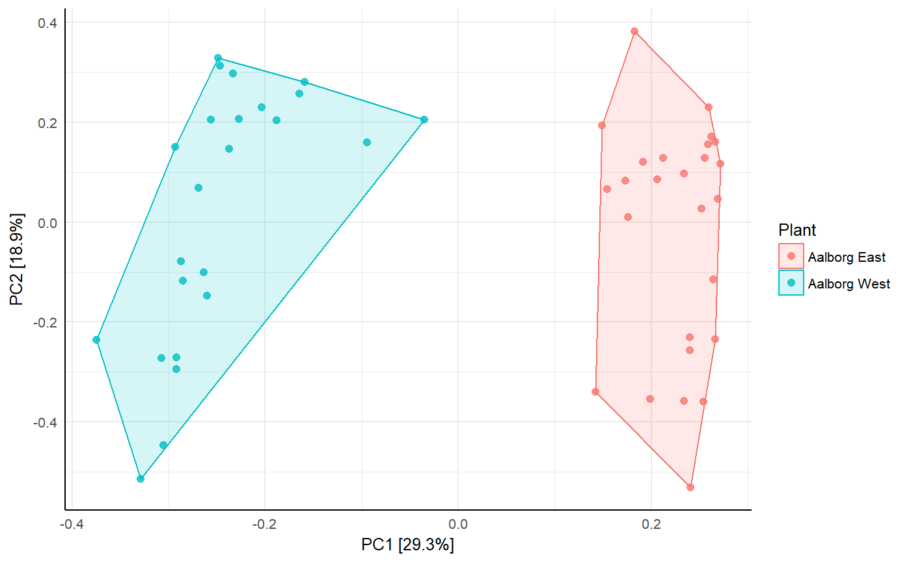

A wrapper around the vegan package to generate beautiful ggplot2 ordination plots suited for analysis and comparison of microbial communities. Simply choose an ordination type and a plot is returned.
amp_ordinate(data, type = "", transform = "", distmeasure = "", constrain = "")
| data | (required) Data list as loaded with amp_load(). |
|---|---|
| filter_species | Remove low abundant OTU's across all samples below this threshold in percent. Setting this to 0 drastically increases the computation time. (Default: `0.1`) |
| type | (required) Type of ordination method. One of: * `"PCA"`: (default) Principal Components Analysis * `"RDA": Redundancy Analysis * `"NMDS": non-metric Multidimensional Scaling * `"PCOA" or `"MMDS"`: metric Multidimensional Scaling a.k.a Principal Coordinates Analysis (not to be confused with PCA) * `"CA"`: Correspondence Analysis * `"CCA"`: Canonical Correspondence Analysis * `"DCA"`: Detrended Correspondence Analysis |
| distmeasure | (required for nMDS and PCoA) Distance measure used for the distance-based ordination methods (nMDS and PCoA), choose one of the following: `"manhattan"`, `"euclidean"`, `"canberra"`, `"bray"`, `"kulczynski"`, `"jaccard"`, `"gower"`, `"jsd"` (Jensen-Shannon Divergence), `"altGower"`, `"morisita"`, `"horn"`, `"mountford"`, `"raup"`, `"binomial"`, `"chao"`, `"cao"`, `"mahalanobis"` or simply `"none"` or `"sqrt"`. See details in `?vegdist`. JSD is stolen from http://enterotype.embl.de/enterotypes.html. |
| transform | (recommended) Transforms the abundances before ordination, choose one of the following: `"total"`, `"max"`, `"freq"`, `"normalize"`, `"range"`, `"standardize"`, `"pa"` (presence/absense), `"chi.square"`, `"hellinger"`, `"log"`, or `"sqrt"`, see details in ?decostand. Using the hellinger transformation is always a good choice and is recommended for PCA/RDA/nMDS/PCoA to obtain a more ecologically meaningful result (read about the double-zero problem). |
| constrain | (required for RDA and CCA) Variable(s) in the metadata for constrained analyses (RDA and CCA). Multiple variables can be provided by a vector, fx c("Year", "Temperature"), but keep in mind that the more variables selected the more the result will be similar to unconstrained analysis. |
| x_axis | Which axis from the ordination results to plot as the first axis. Have a look at the `$screeplot` with `detailed_output = TRUE` to validate axes. (default: `1`) |
| y_axis | Which axis from the ordination results to plot as the second axis. Have a look at the `$screeplot` with `detailed_output = TRUE` to validate axes. (default: `2`) |
| sample_color_by | Color sample points by a variable in the metadata. |
| sample_color_order | Order the colors in `sample_color_by` by the order in a vector. |
| sample_shape_by | Shape sample points by a variable in the metadata. |
| sample_colorframe | (logical) Frame the points with a polygon colored by the sample_color_by argument or not. (default: `FALSE`) |
| sample_colorframe_label | Label by a variable in the metadata. |
| sample_label_by | Label sample points by a variable in the metadata. |
| sample_label_size | Sample labels text size. (default: `4`) |
| sample_label_segment_color | Sample labels repel-segment color. (default: `"black"`) |
| sample_trajectory | Make a trajectory between sample points by a variable in the metadata. |
| sample_trajectory_group | Make a trajectory between sample points by the `sample_trajectory` argument, but within individual groups. |
| sample_plotly | Enable interactive sample points so that they can be hovered to show additional information from the metadata. Provide a vector of the variables to show or `"all"` to display. |
| species_plot | (logical) Plot species points or not. (default: `FALSE`) |
| species_nlabels | Number of the most extreme species labels to plot. Only makes sense with PCA/RDA |
| species_label_taxonomy | Taxonomic level by which to label the species points. (default: `"Genus"`) |
| species_label_size | Size of the species text labels. (default: `3`) |
| species_label_color | Color of the species text labels. (default: `"grey10`) |
| species_rescale | (logical) Rescale species points or not. Basically they will be multiplied by 0.8, for visual convenience only. (default: `FALSE`) |
| species_size | Size of the species points. (default: `2`) |
| species_shape | The shape of the species points, fx 1 for hollow circles or 20 for dots. (default: `20`) |
| species_plotly | (logical) Enable interactive species points so that they can be hovered to show complete taxonomic information about the OTU. (default: `FALSE`) |
| envfit_factor | A vector of categorical environmental variables from the metadata to fit onto the ordination plot. See details in `?envfit`. |
| envfit_numeric | A vector of numerical environmental variables from the metadata to fit arrows onto the ordination plot. The lengths of the arrows are scaled by significance. See details in `?envfit`. |
| envfit_signif_level | The significance threshold for displaying the results of `envfit_factor` or `envfit_numeric`. (default: `0.001`) |
| envfit_textsize | Size of the envfit text on the plot. (default: `3`) |
| envfit_color | Color of the envfit text on the plot. (default: `"darkred"`) |
| envfit_numeric_arrows_scale | Scale the size of the numeric arrows. (default: `1`) |
| envfit_show | (logical) Show the results on the plot or not. (default: `TRUE`) |
| repel | (logical) Repel all labels to prevent cluttering of the plot. (default: `TRUE`) |
| opacity | Opacity of all plotted points and sample_colorframe. 0: invisible, 1: opaque. (default: 0.8) |
| tax_empty | How to show OTUs without taxonomic information. One of the following: * `"remove"`: Remove OTUs without taxonomic information. * `"best"`: (default) Use the best classification possible. * `"OTU"`: Display the OTU name. |
| detailed_output | (logical) Return additional details or not (model, scores, inputmatrix, screeplot etc). If `TRUE`, it is recommended to save to an object and then access the additional data by `View(object$data)`. (default: `FALSE`) |
| ... | Pass additional arguments to the vegan ordination functions, fx rda(...), cca(...), metaMDS(...), see vegan documentation. |
A ggplot2 object. If `detailed_output = TRUE` a list with a ggplot2 object and additional data.
The `amp_ordinate()` function is mainly based on two packages; vegan, which performs the actual ordination, and ggplot2 to generate the plot.
data("AalborgWWTPs") amp_ordinate(AalborgWWTPs, sample_color_by = "Plant")